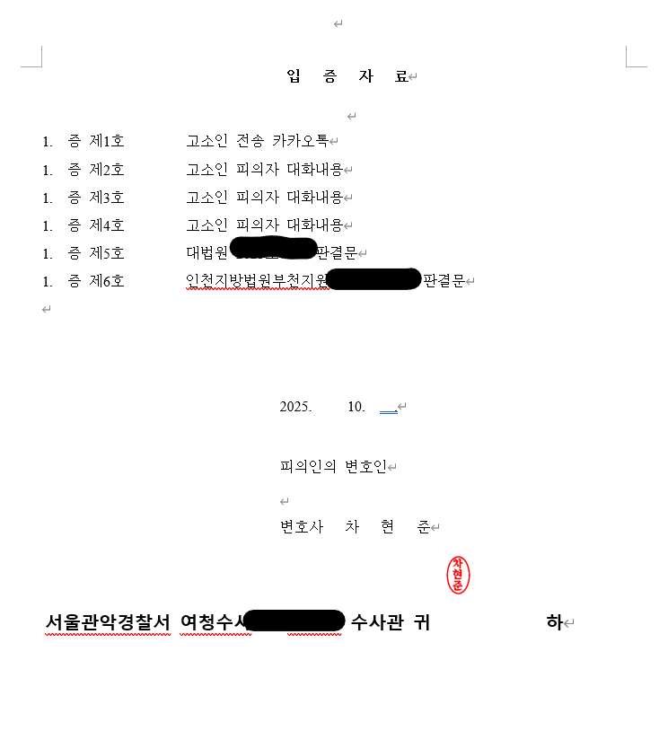

이번 사건의 의뢰인 역시 과거 교제하던 여자친구로부터 통신매체이용음란 및 모욕 혐의로 고소당했습니다. 그러나 법률사무소 준일은 경찰조사 단계부터 동행하여 사건의 전체 흐름과 법리적 쟁점을 정리했고, 변호인의견서를 제출한 끝에 최종적으로 불송치, 혐의없음 결정을 이끌어냈습니다.
의뢰인은 과거 교제하던 여자친구로부터 고소를 당했습니다.
고소인은 의뢰인이 자신에게 성적 표현이 포함된 메시지를 보냈고, 지인들이 듣는 자리에서 자신을 모욕하는 발언을 했다고 주장했습니다. 이에 따라 의뢰인은 통신매체이용음란죄와 모욕죄 혐의로 경찰 조사를 받게 되었습니다.
실제 교제 과정에서 두 사람 사이에 갈등과 말다툼이 있었던 것은 사실이었습니다.
문제는 그 갈등 속에서 나온 표현이 형사처벌 대상인 통매음이나 모욕죄의 구성요건을 충족하는지 여부였습니다.
의뢰인은 억울함을 호소하며 법률사무소 준일을 선임하였고, 차현준 변호사는 경찰조사 단계부터 직접 동행하여 대응을 시작했습니다.
차현준 변호사는 의뢰인의 경찰조사에 직접 동행하여, 수사기관이 사건을 단순히 자극적인 표현 중심으로만 보지 않도록 대응했습니다.
이 사건은 헤어진 연인 사이의 갈등이 배경에 있었고, 서로 감정이 격해진 상황에서 부적절한 표현이 오간 사안이었습니다.
따라서 법률사무소 준일은 해당 표현이 있었다는 점 자체를 무리하게 부인하기보다, 그 표현이 왜 통매음의 구성요건에 해당하지 않는지, 왜 모욕죄의 공연성 요건을 충족하지 않는지를 법리적으로 정리했습니다.
특히 변호인의견서를 통해 다음과 같은 점을 강조했습니다.
문제 된 표현은 교제 중 갈등과 다툼 과정에서 나온 분노 표출의 성격이 강하다는 점, 성적 욕망을 유발하거나 만족시키기 위한 목적이 있었다고 보기 어렵다는 점, 모욕 혐의와 관련해서는 제3자가 이를 인식할 수 있는 공연성 요건이 충분히 인정되기 어렵다는 점을 구체적으로 주장했습니다.
헤어진 연인으로부터 통매음, 모욕, 명예훼손 등으로 고소를 당했다면 초기 대응이 매우 중요합니다.
특히 메시지나 녹취, 카카오톡 대화가 남아 있는 사건에서는 “무조건 하지 않았다”고 대응하기보다, 해당 표현의 경위와 법적 의미를 정확히 구분해야 합니다.
법률사무소 준일은 경찰조사 단계부터 사건의 구조를 분석하고, 불리한 표현이 있더라도 범죄 성립 여부를 끝까지 다투어 의뢰인의 방어권을 지켜냅니다.
※ 구체적인 사건은 사실관계에 따라 달라질 수 있습니다.

 한석일 대표변호사
한석일 대표변호사